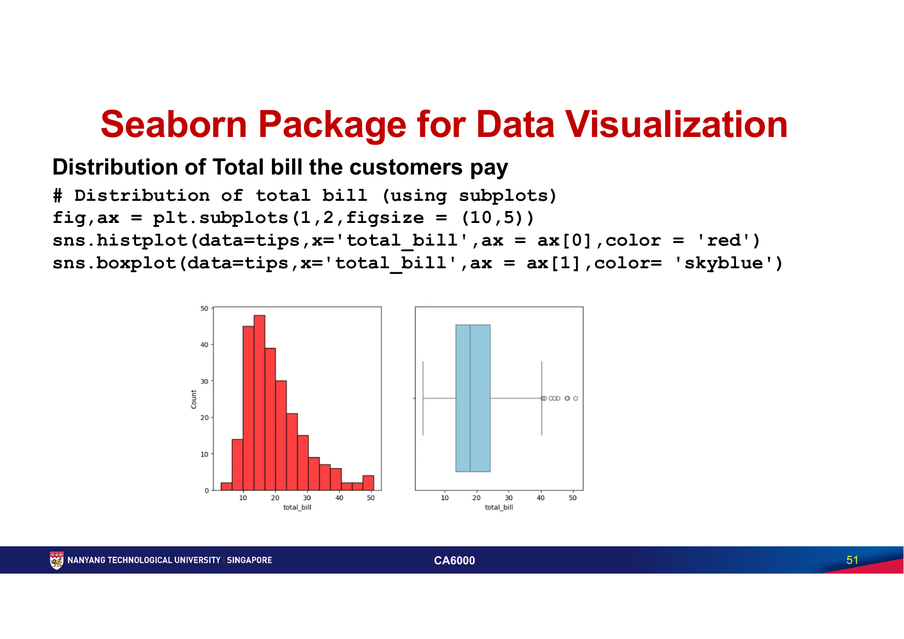
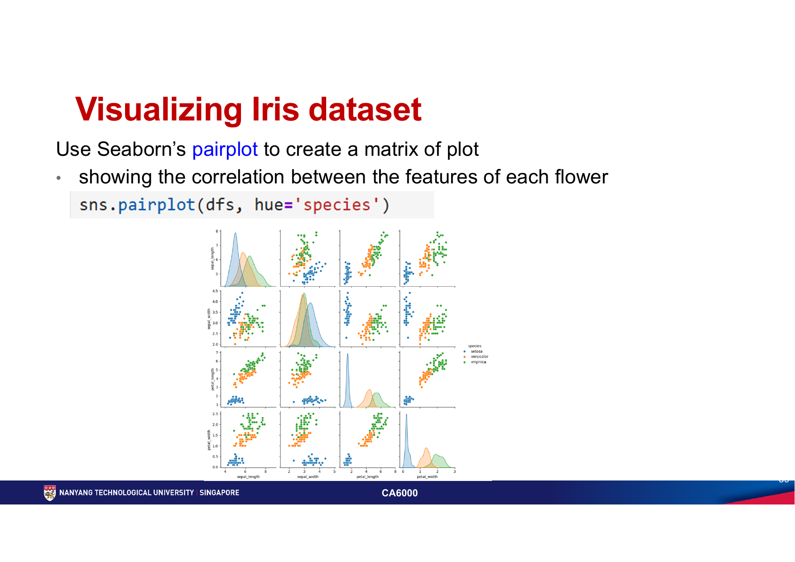
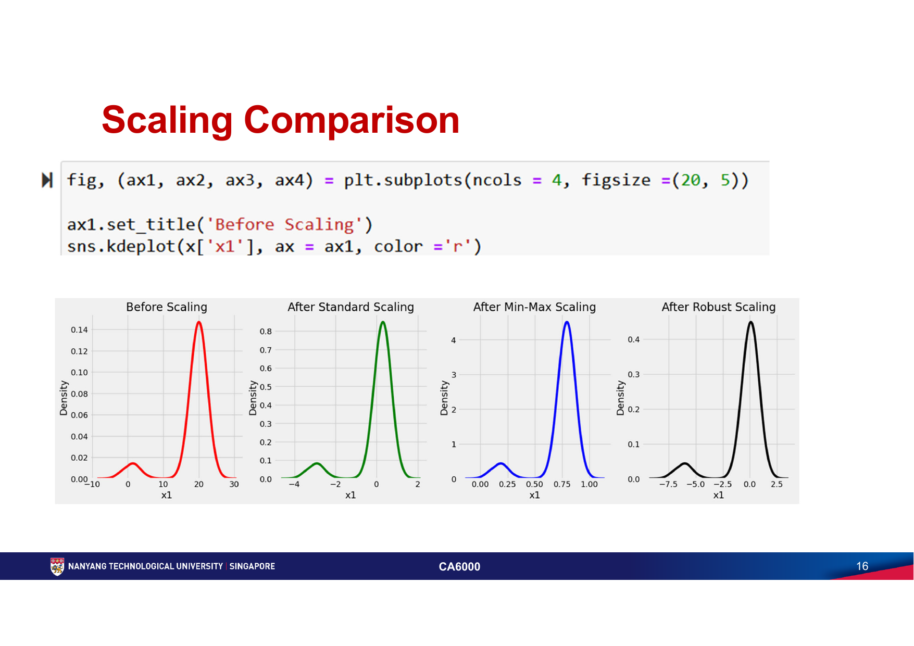
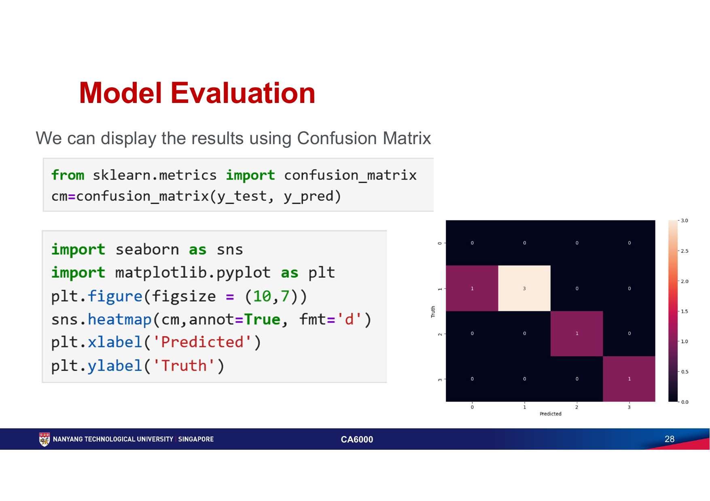

第四周：探索性分析与机器学习基础
第四周把 Pandas 数据处理推进到完整的数据工作流：先用 Seaborn 检查分布、类别和变量关系，再用 scikit-learn 缩放特征、拆分训练/测试集、训练分类器、评价结果并保存模型。
X、y、训练、测试与 inference；读懂 accuracy 和 confusion matrix；完成 Iris 分类的端到端代码。必须掌握的术语
| 术语 | 考试级理解 |
|---|---|
| EDA | Exploratory Data Analysis：在正式建模前，以数据检查、描述统计和可视化寻找分布、异常、关系与分组差异；目标是提出和修正问题，不是直接证明因果。 |
| axes-level / figure-level function | histplot()、boxplot() 等 axes-level 函数可通过 ax= 画进指定子图；relplot()、displot()、pairplot() 会管理整张 Figure / FacetGrid，通常不接收普通 ax=。 |
| feature / target | feature 是模型输入，通常记为二维 X；target / label 是要预测的正确答案，通常记为一维 y。不能把目标列留在 X 中。 |
| fit / transform / predict | fit() 从训练数据学习参数；transform() 使用已学参数转换数据；predict() 用已训练模型产生预测。测试集不能参与拟合。 |
| data scaling | 把不同量纲或范围的特征转换到可比较尺度，避免大尺度特征不合理地支配距离或优化过程；缩放不会自动使数据正态，也不能修复错误数据。 |
| data leakage | 训练过程使用了测试集或未来数据的信息，使测试分数虚高。典型错误是在拆分前对全数据执行 scaler 的 fit_transform()。 |
| supervised learning | 用带正确标签的样本学习输入到输出的映射。Decision Tree、Logistic Regression、KNN 和 AdaBoost 分类器都需要训练特征与目标标签。 |
| training / validation / test set | 训练集用于拟合；验证集用于模型或参数选择；测试集只用于最后评价。小数据示例可省略独立验证集，但不能用测试结果反复调参后仍称其为“最终测试”。 |
| accuracy | 预测正确数除以样本总数。它容易理解，但类别极不平衡时可能掩盖少数类失败。 |
| confusion matrix | 分类结果计数表；scikit-learn 的定义是行表示实际类别、列表示预测类别，主对角线是正确预测，非对角线显示具体混淆方向。 |
| inference | 模型训练完成后，对新、未见数据执行预测的阶段。新输入必须使用与训练时相同的列顺序和预处理。 |
核心知识
Topic 11 · Seaborn｜用统计图形完成 EDA
本章图表 / 数据：tips 数据集；countplot、histplot、boxplot、pairplot、scatterplot、relplot 与 displot。重点是“分析什么、为什么选这张图、图中能合理得到什么结论”。
1. Seaborn、Matplotlib 与 Pandas 的关系
Seaborn 建立在 Matplotlib 之上，提供更高层的统计可视化接口，并能直接使用 Pandas DataFrame 的列名。Matplotlib 仍负责 Figure、Axes、标题和子图布局；Pandas 负责数据检查、清洗和统计。
import pandas as pd
import matplotlib.pyplot as plt
import seaborn as sns
tips = sns.load_dataset("tips")
tips.head()
tips.tail()
tips.dtypes
tips.isna().sum()
2. tips 数据集必须认识
课件的 tips 有 244 行、7 个变量：total_bill（账单）、tip（小费）、sex（付款者性别）、smoker（是否有吸烟者）、day（星期）、time（Lunch / Dinner）与 size（聚餐人数）。前三个数值分析列是 total_bill、tip、size；其余列作为类别变量使用。
# 数值列：count、mean、std、min、quartiles、max
tips.describe()
# 类别列：count、unique、top、freq
tips.describe(include="category")
# 找最高小费与最高账单
tips.sort_values("tip", ascending=False).head()
tips.sort_values("total_bill", ascending=False).head(3)
考点：mean() 易受极端值影响，median() 更稳健；var() 是偏差平方的平均尺度，std() 与原变量同单位；min()/max() 只描述边界，不能代表整体分布。
3. Countplot：回答“每类有多少条记录”
day_order = ["Thur", "Fri", "Sat", "Sun"]
fig, axes = plt.subplots(1, 2, figsize=(12, 4))
sns.countplot(data=tips, x="day", order=day_order, ax=axes[0])
sns.countplot(
data=tips,
x="day",
hue="sex",
order=day_order,
ax=axes[1],
)
axes[0].set_title("Tables served by day")
axes[1].set_title("Tables served by day and payer sex")
plt.tight_layout()
countplot() 统计每个类别的观测数，不是对数值列求平均。星期应明确 order，否则默认顺序可能不符合业务语义；加入 hue 后比较的是子组计数，还要留意各组总样本量不同。
4. Histplot + Boxplot：同时看形状与异常点
fig, axes = plt.subplots(1, 2, figsize=(10, 5)) sns.histplot(data=tips, x="total_bill", bins=30, ax=axes[0], color="red") sns.boxplot(data=tips, x="total_bill", ax=axes[1], color="skyblue") mean_bill = tips["total_bill"].mean() median_bill = tips["total_bill"].median() axes[0].axvline(mean_bill, color="red", linestyle="--", label="Mean") axes[0].axvline(median_bill, color="blue", linestyle=":", label="Median") axes[0].legend() plt.tight_layout()

直方图的 bins 会改变视觉颗粒度：太少会掩盖结构，太多会把抽样噪声误作模式。箱体从 Q1 到 Q3，长度是 IQR = Q3 - Q1；箱内线是 median。默认须通常延伸到距四分位数不超过 1.5 × IQR 的最远数据点，须外点是待检查的潜在离群点，并不等于“错误数据”。
5. Pairplot 与 Scatterplot：检查变量关系
# 所有数值变量的两两关系；对角线显示单变量分布
sns.pairplot(tips, hue="sex")
# 只看与 Iris 分类最相关的一组特征
sns.pairplot(
iris_df,
vars=["sepal_width", "petal_width"],
hue="species",
diag_kind="kde",
)
# 两个数值变量的直接关系
sns.scatterplot(data=tips, x="total_bill", y="tip")
pairplot() 一次检查多个数值变量的两两关系：非对角格通常是散点关系，对角格是单变量分布。hue 可比较类别是否形成不同点群；vars 可缩小矩阵，避免变量太多导致图不可读。散点的上升趋势表示相关，但不能单独证明“账单增加导致小费增加”。

6. Faceting：用列与颜色比较条件差异
# 付款者性别拆成两个面板
sns.relplot(
data=tips,
kind="scatter",
x="total_bill",
y="tip",
col="sex",
)
# 每天一个面板，颜色区分 Lunch / Dinner
sns.relplot(
data=tips,
kind="scatter",
x="total_bill",
y="tip",
col="day",
hue="time",
col_wrap=2,
)
# 比较 smoker 子组的小费分布
sns.displot(data=tips, x="tip", hue="smoker", kind="hist")
col 把数据分成共享设计的多个小图，hue 在同一面板用颜色区分组，col_wrap 控制每行面板数。分面后仍要比较轴范围、组内样本量、重叠程度与异常点；不要仅凭两张图“看起来不同”就宣称总体差异。
Seaborn 图表选择速记
| 问题 | 首选图 | 必须解释 |
|---|---|---|
| 每个类别有多少观测？ | countplot() | 类别顺序、样本不平衡、hue 子组。 |
| 一个数值变量怎样分布？ | histplot() | 中心、离散、偏斜、多峰、bins 与潜在异常。 |
| 组间分布与离群点是否不同？ | boxplot() | median、Q1/Q3、IQR、须和离群点。 |
| 多个数值变量两两怎样关联？ | pairplot() | 方向、形状、点群、重叠、异常与类别可分性。 |
| 两个数值变量是否关联？ | scatterplot() | 趋势、非线性、异方差、分组与“相关不等于因果”。 |
| 同一关系在多组条件下是否不同？ | relplot(col=..., hue=...) | 面板可比性、样本量和组内/组间差异。 |
Topic 11 · Scikit-learn｜缩放、训练、评价与推理
本章方法 / 案例：StandardScaler、MinMaxScaler、RobustScaler；Rental.csv 的 Decision Tree 分类；train/test split、accuracy、confusion matrix、joblib；Iris 的可视化与多算法分类。
1. 为什么缩放数据
特征可能使用不同单位和范围，例如年龄约几十、收入约数万。依赖距离或梯度优化的模型会受到尺度影响：KNN 的距离可能被大尺度列支配，Logistic Regression / SVM 的优化和正则化也会受影响。Decision Tree 按阈值切分，通常不依赖特征尺度，但保持一致预处理工作流仍有利于比较模型。
| Scaler | 核心计算 | 适用与限制 |
|---|---|---|
| StandardScaler | z = (x - mean) / std；每列均值约 0、标准差约 1。 | 常用于 Logistic Regression、SVM、KNN；mean/std 会被极端值拉动，因此对 outlier 敏感。标准化不要求输入先是正态分布，也不会保证输出正态。 |
| MinMaxScaler | 默认 x' = (x - min) / (max - min)，训练范围映射到 [0, 1]。 | 保留相对顺序、适合需要固定范围的输入；min/max 对异常值敏感。原数据有负数也仍默认映射到 [0,1]；只有设置 feature_range=(-1, 1) 才得到该范围。 |
| RobustScaler | x' = (x - median) / IQR；使用 median 与 Q1–Q3。 | 当异常值很多时比 mean/std 稳健；它减弱异常值影响，但不会删除异常值，也不保证高度偏斜分布变对称。 |
from sklearn.preprocessing import StandardScaler, MinMaxScaler, RobustScaler standard = StandardScaler() minimum_maximum = MinMaxScaler() robust = RobustScaler() X_standard = standard.fit_transform(X) X_minmax = minimum_maximum.fit_transform(X) X_robust = robust.fit_transform(X)

2. 最重要的防泄漏顺序
from sklearn.model_selection import train_test_split
from sklearn.preprocessing import StandardScaler
X_train, X_test, y_train, y_test = train_test_split(
X,
y,
test_size=0.30,
random_state=42,
stratify=y,
)
scaler = StandardScaler()
X_train_scaled = scaler.fit_transform(X_train) # 只从训练集学习
X_test_scaled = scaler.transform(X_test) # 使用训练参数
test_size=0.30 表示 30% 测试、70% 训练；random_state 固定随机切分以便复现；分类问题的 stratify=y 尽量保持两边类别比例。考试若问“为什么不能先缩放全数据”，答案是全数据的 mean/min/max/median 已含测试信息，会造成 leakage。
3. Rental.csv：拆出 X 与 y
import pandas as pd
from sklearn.tree import DecisionTreeClassifier
rental = pd.read_csv("Rental.csv")
X = rental.drop(columns="Room") # Condo、Rental 是输入
y = rental["Room"] # Room 是目标类别
model = DecisionTreeClassifier(random_state=42)
model.fit(X, y)
predictions = model.predict([
[1, 1450], # condo type 1, budget 1450
[2, 1450], # condo type 2, budget 1450
])
X 必须是“样本 × 特征”的二维结构，y 是每个样本的标签。fit(X, y) 是训练；predict(new_X) 是预测。新样本的特征数量与顺序必须和训练一致。仅用全部数据训练再拿相同数据评价，不是有效的泛化能力测试。
4. 训练、测试与 Accuracy
from sklearn.metrics import accuracy_score, confusion_matrix
X_train, X_test, y_train, y_test = train_test_split(
X, y, test_size=0.20, random_state=42, stratify=y
)
model.fit(X_train, y_train)
y_pred = model.predict(X_test)
accuracy = accuracy_score(y_test, y_pred)
matrix = confusion_matrix(y_test, y_pred)
课件展示重复随机切分会得到不同 accuracy，尤其是 Rental 这种小数据集。原因是每次测试样本和类别组合不同，少数预测就能显著改变比例。应固定随机种子做可复现实验；若要更稳定地估计表现，可在课程后续使用交叉验证，但不能挑选一次最高分当最终结果。
5. Confusion Matrix：看模型具体错在哪里
import matplotlib.pyplot as plt
import seaborn as sns
sns.heatmap(matrix, annot=True, fmt="d", cmap="mako")
plt.xlabel("Predicted label")
plt.ylabel("True label")
plt.title("Confusion matrix")
plt.show()

高频易错：不要只看颜色深浅，要读格子计数与坐标轴；不要交换 y_test 和 y_pred；不同类别样本量不相等时，单看总 accuracy 不足以描述每类表现。
6. 保存模型与运行 Inference
import joblib
joblib.dump(model, "rental-budget.joblib")
loaded_model = joblib.load("rental-budget.joblib")
new_predictions = loaded_model.predict([
[1, 3000],
[2, 3000],
])
保存的是已经 fit() 的模型状态。若训练包含 scaler，还必须保存并复用同一个 scaler，不能在新输入上重新 fit()。只加载可信来源的 joblib 文件，因为反序列化不可信文件有安全风险。
7. Iris：“Hello World” 分类数据集
Iris 一共 150 个样本、3 个物种：Setosa、Versicolor、Virginica，每类 50 个；4 个数值特征是 sepal length、sepal width、petal length、petal width。load_iris() 返回数据、目标、特征名和目标名，可组装为 DataFrame 后用 sample()、describe()、groupby() 与 pairplot 检查。
from sklearn.datasets import load_iris
iris = load_iris(as_frame=True)
iris_df = iris.frame.rename(columns={"target": "species"})
iris_df["species"] = iris_df["species"].map(
dict(enumerate(iris.target_names))
)
iris_df.sample(4, random_state=42)
iris_df.describe()
iris_df.groupby("species").size()
8. Iris 70:30 Finger Exercise：完整答题模板
from sklearn.datasets import load_iris
from sklearn.metrics import accuracy_score, confusion_matrix
from sklearn.model_selection import train_test_split
from sklearn.tree import DecisionTreeClassifier
iris = load_iris()
X = iris.data
y = iris.target
X_train, X_test, y_train, y_test = train_test_split(
X,
y,
test_size=0.30,
random_state=42,
stratify=y,
)
model = DecisionTreeClassifier(random_state=42)
model.fit(X_train, y_train)
y_pred = model.predict(X_test)
print("Accuracy:", accuracy_score(y_test, y_pred))
print("Confusion matrix:\n", confusion_matrix(y_test, y_pred))
Finger Exercise 四步必须完整出现：70:30 split、用训练集 fit()、对测试集 predict()、用 confusion matrix 展示测试结果。若换模型，课件示例包括 LogisticRegression(max_iter=400)、KNeighborsClassifier() 与 AdaBoostClassifier()；不同模型应使用相同切分才可公平比较。KNN 和 Logistic Regression 通常应先缩放，Decision Tree 通常不需要。
考试要点总表
| 题型 | 答题必须出现 |
|---|---|
| 解释 scaler | 计算使用的统计量、输出尺度、outlier 敏感性、适用算法；强调只对训练集 fit。 |
| 写分类流程 | 定义 X/y → split → 可选 preprocessing → instantiate → fit → predict → evaluate。 |
| 解释 split | 训练集学习、测试集模拟未见数据；说明比例、随机性、random_state 与分类时的 stratify。 |
| 解释 confusion matrix | 行 actual、列 predicted、对角正确、非对角错误方向；联系类别数量，不只报 accuracy。 |
| 解释图表 | 分析对象、选图原因、读到的模式、异常/样本量/因果限制。 |
| 比较算法 | 复用相同数据切分与评价标准；说明距离/优化型模型常需缩放，树模型通常不依赖尺度。 |
常见错误
- 在拆分前对全数据执行
fit_transform()，把测试集统计量泄漏进训练过程。 - 把 target 列保留在
X，模型因直接看到答案而得到虚假高分。 - 误写“只要原数据有负数，MinMaxScaler 就自动输出 [-1, 1]”；默认始终是
[0, 1]。 - 认为 StandardScaler 会把任何分布变成正态，或认为 RobustScaler 会删除 outlier。
- 把 accuracy 当作唯一评价，忽略类别不平衡和 confusion matrix 中的具体误判。
- 在新数据上重新拟合 scaler，或以不同列顺序传给保存的模型。
- 把 countplot 当成数值平均图；把直方图 bins 造成的形状当作稳定事实；看到散点趋势就宣称因果。
- 把 figure-level 的
relplot()/displot()当作普通 Axes 函数塞进ax=，导致布局理解错误。
练习
分别用 countplot、histplot + boxplot、scatterplot 和 relplot 回答“哪天样本最多”“账单是否右偏”“账单与小费是否有关”“这种关系是否随 day / time 改变”。每张图写出选图原因、结论和一个不能证明的内容。
构造含一个极端值的两列数据，分别使用 StandardScaler、MinMaxScaler、RobustScaler。手算其中一列的核心统计量，并解释为什么三种结果不同。
先错误地在 split 前缩放，再改为只在
X_train 上拟合；用一句话解释为何第一种测试分数不可信。按课件 Finger Exercise 训练 Decision Tree，画 confusion matrix；再以同一切分比较 Logistic Regression 和 KNN，并说明哪两个模型需要缩放。
保存“scaler + classifier”，在新 notebook 加载并预测四个新样本。逐项核对列名、列顺序、shape、预处理和类别名称映射。